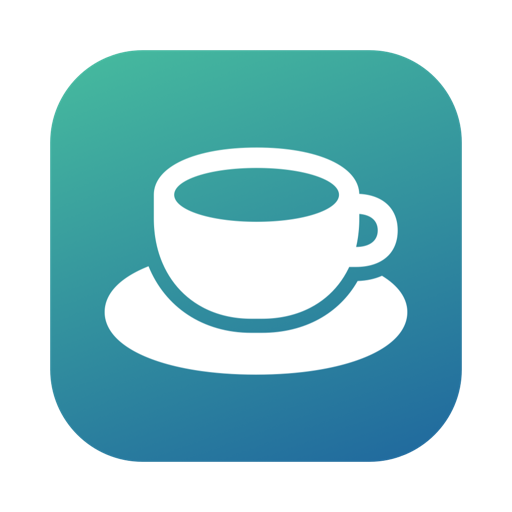

RecessLook up from the screen.
Recess is a break reminder for Mac and Windows. When it's time to rest your eyes, stretch or get up, it gently dims the screen, and steps back the moment you return.
Free and open source. For macOS 14 or later, or download for Windows.
0:20
Look at something far away.
Small breaks, on a rhythm.
Out of the box there are two: a few seconds every quarter of an hour to unclench and look across the room, and ten minutes each hour to properly get up. Change either, or add your own.
-
A heads-up
A minute before a longer break, a notification gives you time to finish your sentence.
-
The screen dims
A countdown, a calm theme and a suggestion. Postpone or skip if you really have to.
-
Back to work
The screen comes back by itself. Already stepped away, or closed the lid? That counted as a break.
Twenty seconds is enough.
Rest your eyes on something far away. Try it now; the page will wait for you.
Small details that make it stick.
Fits around your day
- Start on time, wait until you stop typing, or ask first.
- Only in work hours, only on weekdays, or timed from your calendar.
- Holds off during video calls, presentations and fullscreen apps.
- Time away from the keyboard, and sleep, count as rest.
Keeps you honest
- Cap how many times a day you can postpone or skip.
- Lock the buttons for the first few seconds of a break.
- Optionally block Cmd-Tab and Force Quit during a break.
- A chart of breaks taken, postponed and skipped.
Yours to shape
- Break screens with a breathing guide, clocks, eye and desk stretches, or your own photos, text or video.
- Sounds, spoken reminders, and your own scripts: AppleScript or shell on a Mac, PowerShell on Windows.
- A countdown in the menu bar or notification area, and global keyboard shortcuts.
recess://links for Shortcuts and automation.
Installing takes a minute.
Recess isn't notarized by Apple yet, so the first time you open it macOS asks you to confirm. You only do this once. It needs macOS 14 Sonoma or later, on Apple Silicon or Intel.
- Open Recess.dmg and drag Recess into Applications.
- Open Recess. When macOS says it can't verify the app, click Done.
- In System Settings › Privacy & Security, scroll to Security and click Open Anyway.
- Confirm with Touch ID or your password, then click Open.
Rather use Terminal?
xattr -dr com.apple.quarantine /Applications/Recess.app
open /Applications/Recess.appRecess for Windows isn't code-signed yet, so Windows may stop it the first time. It installs for your account only, without admin rights, on Windows 10 (version 2004) or 11.
- Run Recess-Setup.exe.
- If Windows says it protected your PC, click More info, then Run anyway.
- Recess opens with a short setup, then lives by the clock in the notification area.
- To keep its icon in view, turn Recess on under Settings › Personalization › Taskbar.
Rather not install? Recess-windows.zip
is a portable copy: unzip it anywhere and run Recess.exe.
Security
SmartScreen didn't recognise this app.
Nothing leaves your computer.
No account, no analytics, and no network requests of its own; on Windows it fetches only the calendars you add. Your settings are plain files on your computer. Recess is MIT licensed, so you can read every line, or build it yourself:
git clone https://github.com/NeelkanthTandel/recess.git
cd recess && make install # Mac
cd recess\windows; dotnet run --project src/Recess.App -c Release # Windows